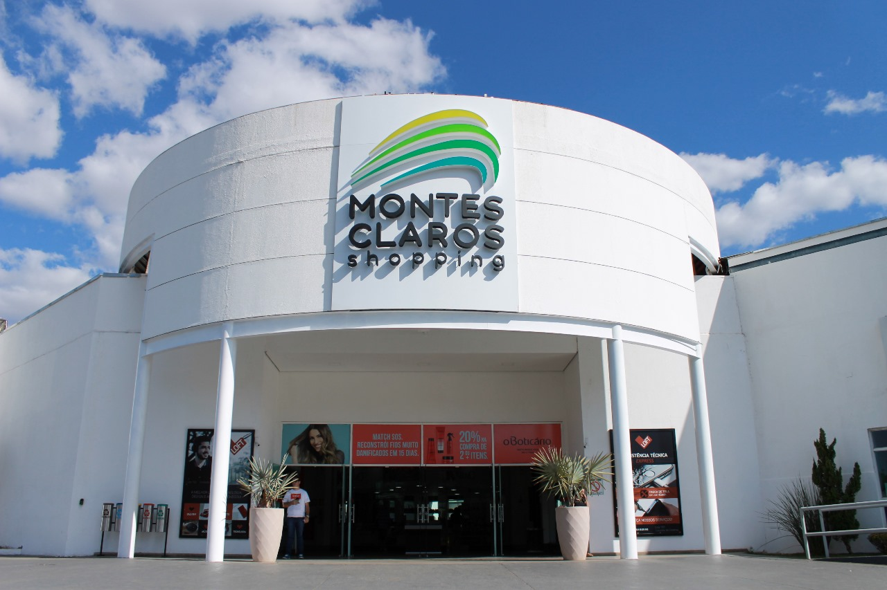

Montes Claros
Montes Claros é a quinta cidade mais populosa do estado de Minas Gerais, uma cidade conhecida por sua mistura encantadora de tradição, cultura e belezas naturais. Com clima quente, hospitalidade mineira e forte identidade regional, é um destino ideal para quem busca conhecer o interior do Brasil com autenticidade.
Lugares para visitar
Serra do Mel e Parque Estadual da Lapa Grande: perfeitos para trilhas, cachoeiras, grutas e contato com a natureza.

Gruta do Japão: atrativo natural com formações rochosas impressionantes.

Igreja Matriz de Nossa Senhora Aparecida e Catedral Metropolitana: pontos históricos e arquitetônicos da cidade.

Museu Regional do Norte de Minas: mostra a cultura sertaneja e indígena da região.

Montes Claros Shopping: Shopping center com praça de alimentação, cinemas, salas de jogos e grandes marcas.
Mochila do Turista
Ao turistar em Montes Claros lembre-se sempre de estar preparado para tudo, pois é um local muito quente e com matas cheias de insetos, caso opte por fazer uma trilha, tenha sempre com você:
- Protetor solar (FPS alto)
- Boné ou chapéu
- Óculos de sol com proteção UV
- Roupas leves e confortáveis (preferência para algodão)
- Chinelo ou sandália (para passeios mais tranquilos)
- Toalha pequena ou lenço para o suor
- Garrafa de água reutilizável (leve sempre cheia!)
- Lanches leves (barras de cereal, frutas secas, castanhas)
- Repelente (útil em áreas de natureza)
- Tênis ou bota confortável (ideal para trilhas e caminhadas)
- Mochila leve
- Saco plástico (para lixo ou roupas molhadas)
- Celular com câmera (para fotos e GPS)
- Carregador portátil (powerbank)
- Documentos pessoais (RG, CPF, cartão SUS, CNH)
- Dinheiro em espécie (alguns lugares não aceitam cartão)